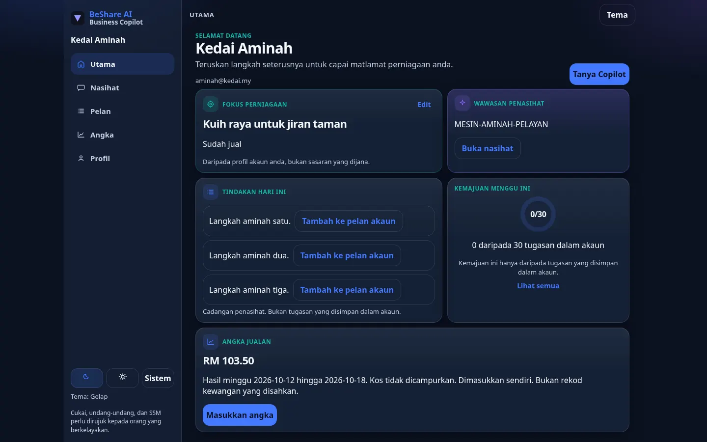

Dua nama, satu halaman. Sistem kunci API lama tidak diteruskan.
BeShare AI — Intelligent Business Ecosystem
Bina Perniagaan Lebih Bijak dengan AI.
Daripada idea dan strategi hingga operasi dan pemasaran — BeShare AI membantu anda mengambil langkah perniagaan dengan lebih terancang.
Copilot dalam penyediaan beta. Pendaftaran awam belum diisytiharkan dibuka.

Ekosistem yang sedia ada
Business Copilot ialah produk yang ditonjolkan. Gerbang lain kekal di destinasi masing-masing, dengan status yang sudah tertulis pada halaman itu.
Beta disediakan
WhatsApp
Live
Business Copilot
Bantu mula berniaga, susun gerak kerja minggu ini, dan faham perniagaan dalam Bahasa Malaysia.
Terokai Business CopilotIPO
Meja kerja IPO: radar, kad HATA, portfolio, dan analisis. Telegram kekal untuk amaran harga, notis BELI, dan digest.
Buka gerbang LiveAI Video Studio
Cipta video pemasaran menawan daripada teks — skrip, suara, dan visual dijana secara automatik oleh AI.
Buka gerbangTiga laluan, tanpa angka rekaan
Rancang
Susun minggu perniagaan dalam Business Copilot. Beta disediakan. Pendaftaran awam belum diisytiharkan dibuka.
Operasi
BeShare AI OS masih prototip dengan data demo. Sambungan Meta sebenar belum dihidupkan.
Pemasaran
AI Video Studio kekal di pautan studionya. Halaman ini tidak menambah hasil atau prestasi baharu.